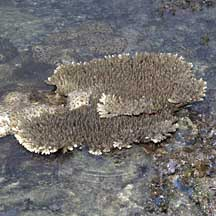
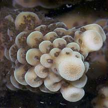
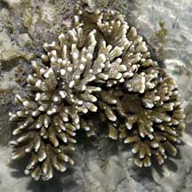
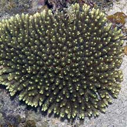
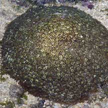
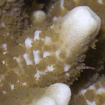
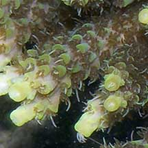
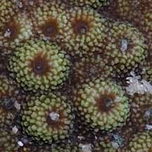

|
|
| hard corals text index | photo index |
| Phylum Cnidaria > Class Anthozoa > Subclass Zoantharia/Hexacorallia > Order Scleractinia |
| Acroporid
corals Family Acroporidae updated Sep 2025
Where seen? Corals belonging to the Family Acroporidae are seen on many of our Southern shores. On undisturbed shores, often more colonies, larger colonies, and a wider range of species are encountered. Of the reef-building corals, the Family Acroporidae has the largest number of species and includes some of the fastest-growing corals. Members of the family are fast-growing, opportunistic and highly successful in reproduction. Generally, the family is usually dominant in almost every reef in terms of numbers and variety of species. Where there is good light and water circulation, Acropora displaces other groups of corals. Acropora and Montipora together account for one-third of reef-building (hermatypic) coral species. Features: Most members of the family have an axial corallite at the end of the branch. New corallites (called secondary or radial corallites) bud off along the sides while the axial corallite continues to grow upwards on the tip of the branch. All members of the family contain symbiotic algae (zooxanthellae). The axial corallite lacks zooxanthellae but grows rapidly as it is fed by other areas of the colony. The tips are often white or brightly coloured. The various species have various colony shapes including thin plates, encrusting layers or boulder-shaped colonies. The most familiar are those that branch into bushy or flat 'table-top' shapes. Status: While a few species are listed as Endangered, Vulnerable or Near Threatened, for most there is inadequate information as at 2024 to make an informed assesment of the conservation status of the recorded Family Acroporidae corals in Singapore. |
 Some acropora coral form table-like colonies. Raffles Lighthouse, Jun 07 |
 Most members have an axial corallite. Sisters Island, Dec 05 |
 Some montipora corals are plate-like. Sisters Island, Dec 05 |
| Some Acroporidae corals on Singapore shores |
|
 |
 |
 |
|
Montipora
corals
Montipora sp. |
Acropora
corals
Acropora sp. |
Pebble corals
Astreopora sp. |
|
Colonies:
branching, thin plates.
|
Colony:
branching to form
bushy or tabletop-like structures. |
Colonies:
boulder-shaped
or encrusting. |
|
 |
 |
 |
|
Corallites
not raised,
in some, corallites are embedded. |
Raised
corallites. Axial corallite
(at the tip) is tubular, other corallites are pocket shaped.. |
Corallites
conical and evenly spaced, coral colony surface appears pebbled.
|
|
May
be confused
with Porites. |
May
be confused
with Pocillopora. |
| Family
Acroporidae recorded for Singapore from Checklist of Cnidaria (non-Sclerectinia) Species with their Category of Threat Status for Singapore by Yap Wei Liang Nicholas, Oh Ren Min, Iffah Iesa in G.W.H. Davidson, J.W.M. Gan, D. Huang, W.S. Hwang, S.K.Y. Lum, D.C.J. Yeo, May 2024. The Singapore Red Data Book: Threatened plants and animals of Singapore. 3rd edition. National Parks Board. 663 pp.
|
|
Links
References
|